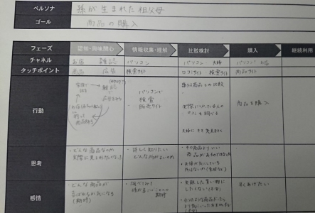

4/9-5/20
ー論文調査ー
タイトル：おもちゃ学試論 —乳幼児保育におけるおもちゃの可能性—
桑原 逸美（2011）
内容
・おもちゃとは子供の遊びの幅が広がり、発展する道具であり、自分の資質を伸ばせるものである
・おもちゃを通じて、物事の原理や法則、仕組みなどを体得し、知恵や技を学んで人間として生きる力を養うこともできる
・自分の手で働きかけて自己流のおもちゃを製作する発見と喜びは，人の成長には欠かせない成功体験となるものである
・成長段階で好まれるおもちゃにも様々な効用がある
・子供たちが現実に存在する無限のものを思索と歓声の素材として利用できるようになるための初歩段階で欠かせないものがおもちゃである
・おもちゃは人間の生涯において世界を所有し、動かし、人と外界に対 して親和的に生きていくための最も基本的な教育のための道具であり、遊びの手段でもある
見解
・おもちゃは遊びの道具としてみていたが、子供の成長を支える部分が多いことから、どんなおもちゃでも知育玩具であるといえるのではないか
・完成されたおもちゃが多い中、おもちゃを作り上げる体験について注目したことがなかったが、作り上げることを支えるおもちゃが必要である
ーカスタマージャーニーマップー
先生のアドバイスからカスタマージャーニーマップを作製した
概要
カスタマージャーニーマップとは顧客が商品を認知してから、購入し、さらに購入後の行動（例えば評価・レビュー・口コミなど）に至るまでの行動を時系列で把握する考え方のこと
作り方
1.ペルソナの設定
手元にある情報をもとにペルソナを設定
細部にわたって作り、具体的に1人の人物を想定することが重要
2．ペルソナの行動を仮説として設計
設定したペルソナが、自社の商品・サービスを認知して購入するまでに、どのような行動をとるのかを仮説として設計
ペルソナの行動をいくつかのフェーズに分ける
フェーズでペルソナがとる行動を洗い出す
3.課題の抽出
さまざまな課題の中で、サービスとして提供すべき価値のポイントがどこに存在しているか検討する
4.仮説の検証
顧客へのアンケート・ヒアリングで仮説を検証
各フェーズのペルソナの行動を整理
5.フレームワークの決定
参考URL：カスタマージャーニーとは？｜事例５選から学ぶカスタマージャーニーマップの作り方
2時間で作るカスタマージャーニーマップ――実例とともに考える新しい「おもてなし」のカタチ
実践

問題点
・まだどのように書けばいいのかがわかっていない
・どんな商品を作りたいのかが決まっていない